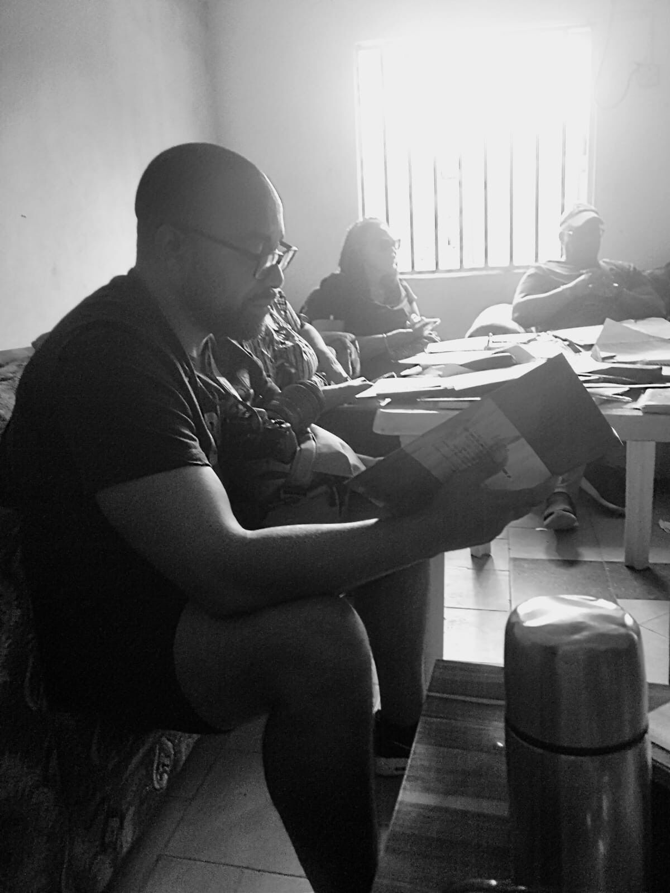
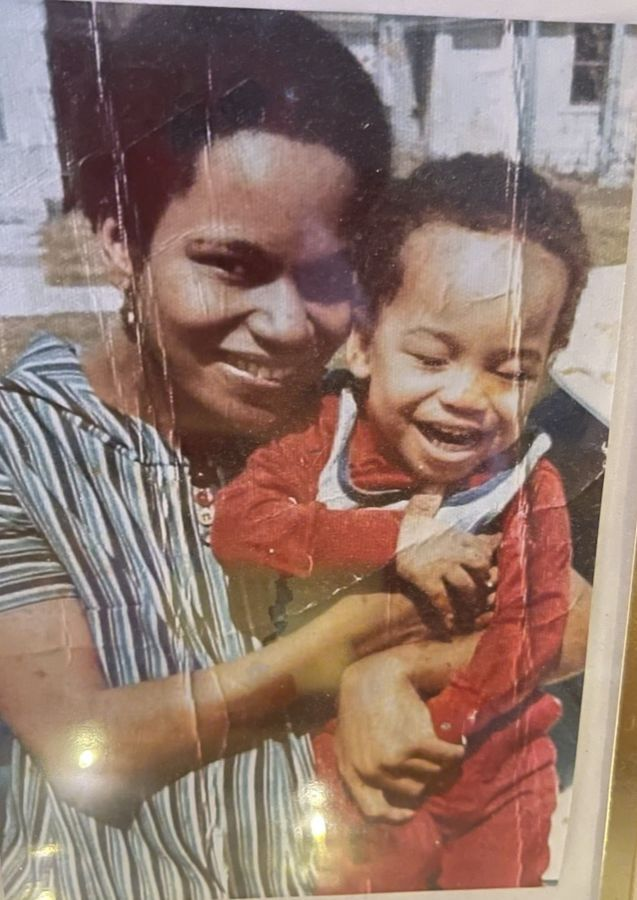
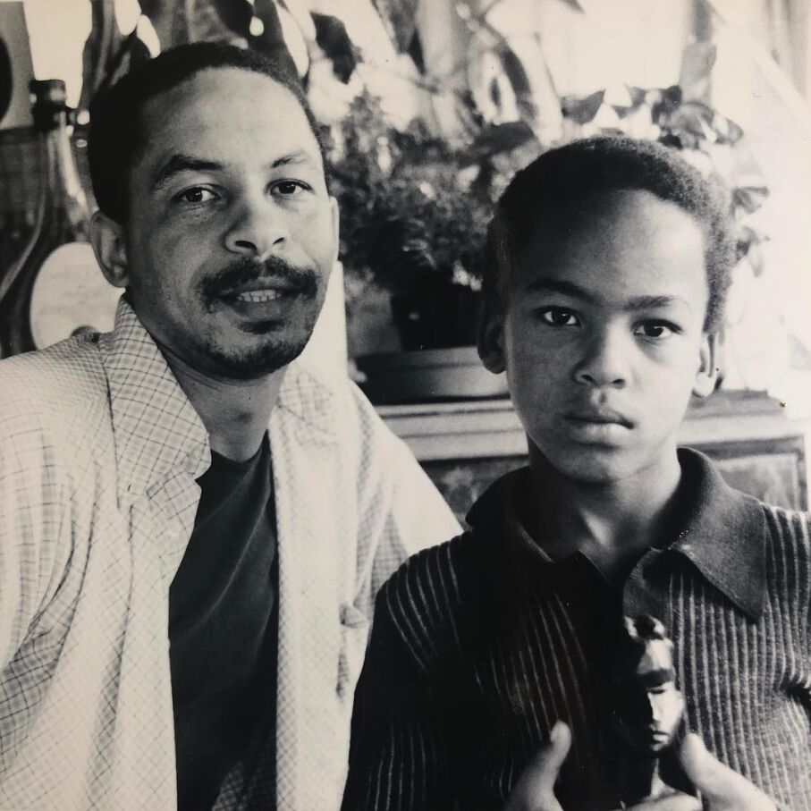
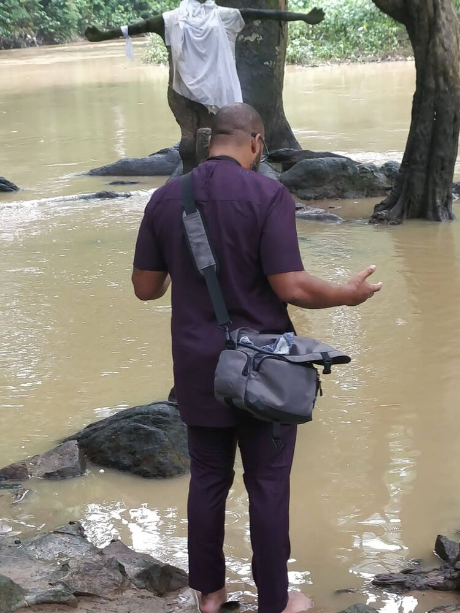
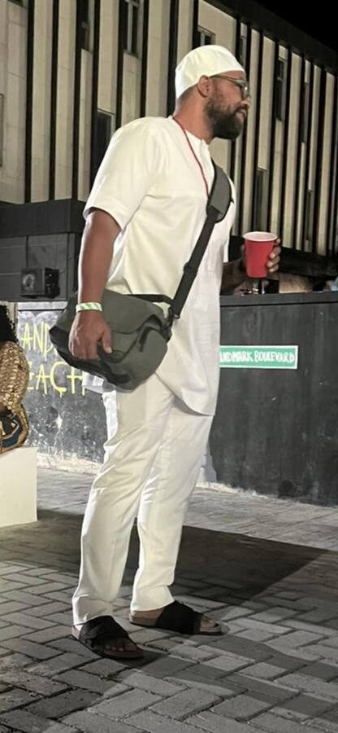
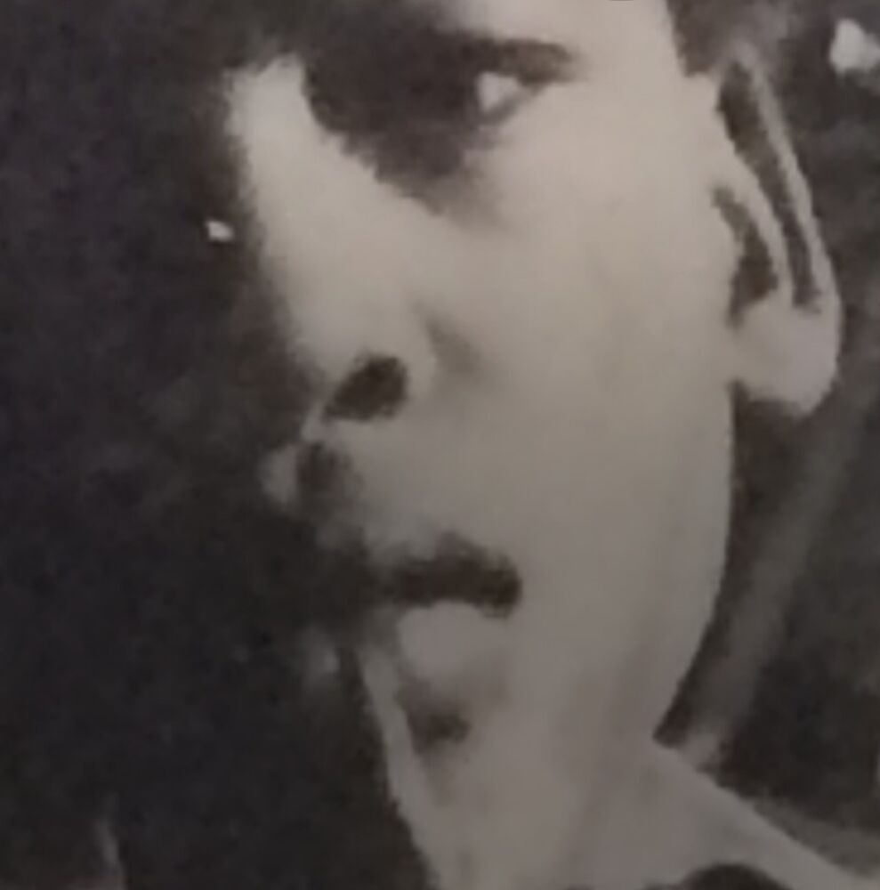

The environment writes on the body at every scale, from methylation to civilization. Consciousness reads the writing. And the reading is the rewriting.





The photograph my father took"That's the cover of your book."
"I remember the first time somebody told me that that was the cover of a book. They said, that's the cover of your book. As if they were speaking into existence, as they saw something in the future. And I've held that. I was in grad school when I was told that."
Eli M. Davis · photograph by Cranston Davis
The body keeps a record of the conditions it lived inThe body keeps the recordExperience changes which genes are switched on, without changing the genes themselves. In rats, how much a mother licks and grooms her pups changes how their stress genes are read for life.Weaver et al. (2004), Epigenetic programming by maternal behavior, Nature NeuroscienceMoore (2015), The Developing Genome, Oxford University Press. History is the path that produced those conditionsHistory is the pathRacial gaps in health track the conditions people are made to live in, not their genes. Inequality becomes embodied.Kuzawa and Sweet (2009), Epigenetics and the embodiment of race, American Journal of Human Biology. Read together, they become a consciousness: the power to see what was written, and to write again.
Run your hand over the underlined words. Each one opens its receipts.
Epigenetic Literacy+Historical Contextuality=Epigenetic Consciousness
Behavioral Epigenetics+Historical Contextuality=Epigenetic Consciousness
One breeds into the next. You cannot have behavioral epigenetics without becoming epigenetically literate. Add the history, and you arrive at a consciousness that understands nature and nurture, and what the environment an organism lives in does to its biology.
Concept equations: a way to hold the idea, not arithmetic and not a molecular claim.
The harm is not passed down.Not passed downIn humans, these marks are not shown to travel across generations through egg and sperm. That is why the harm has to be done again: the persistence is social, not genetic.Heard and Martienssen (2014), Transgenerational epigenetic inheritance: myths and mechanisms, Cell It is done again.Done againRepeated stress from the same social conditions wears the body down over a life. Black women in the U.S. show it earlier: weathering.Geronimus (1992), The weathering hypothesis, Ethnicity & DiseaseMcEwen (1998), Protective and damaging effects of stress mediators, New England Journal of Medicine
Each generation, the social stamp takes a new form and does the same work on the body. Change the room, the law, the funding, and the next generation comes out unstamped. Harm and repair, one physics.
The stamp a society presses on a body it has narrated.
The counter-stamp: homeplace, African Diaspora LiteracyAfrican Diaspora LiteracyKnowing the history, cultures, and ways of knowing of African people across the diaspora, taught from the inside. Joyce E. King named it; Gloria Boutté extended it in classrooms.King and Swartz (2016), on African Diaspora LiteracyBoutté, Educating African American Students, kin, re-narration.
How environments write themselves into people, and how education can write restoration back.
Teaching Black children from inside the knowledge of the diaspora, never from its margins.
Sovereignty first: what the tools can do, who built them, and how to put our own fingerprint on them.
Keynotes, conferences, district professional learning, podcasts, and classrooms, in the United States and abroad.
eli@4blackcenturies.com
Sovereignty first, for educators and schools.
The framework, for teams and leaders.
Behavior systems that begin with what is right.
Endarkened ways of knowing, in practice.